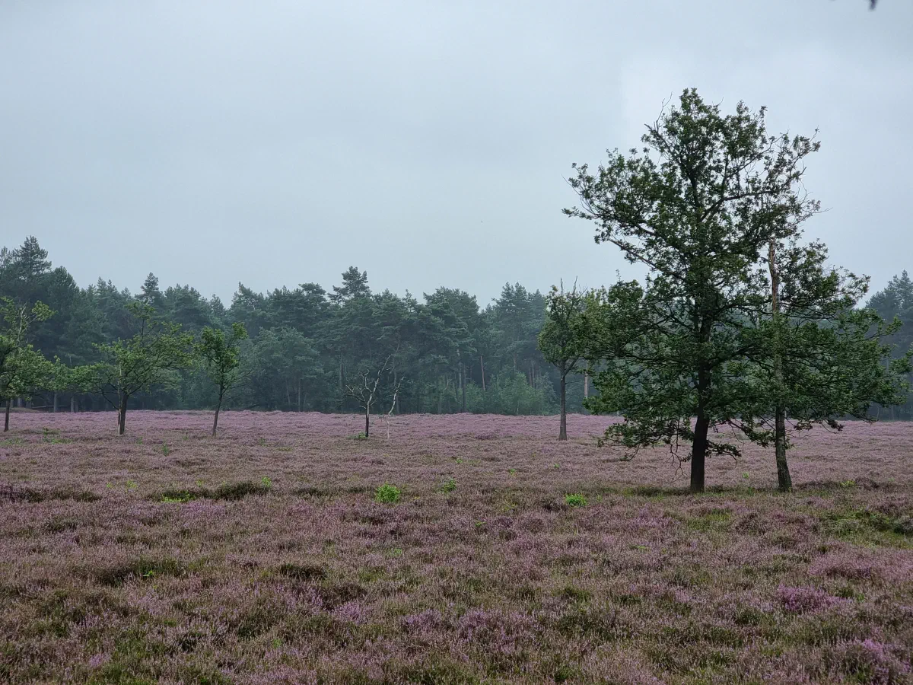
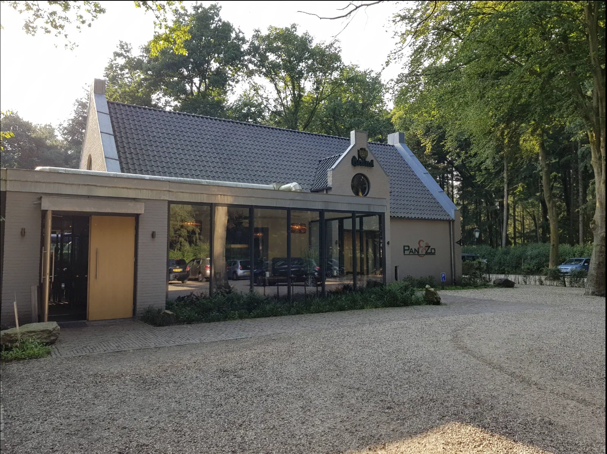
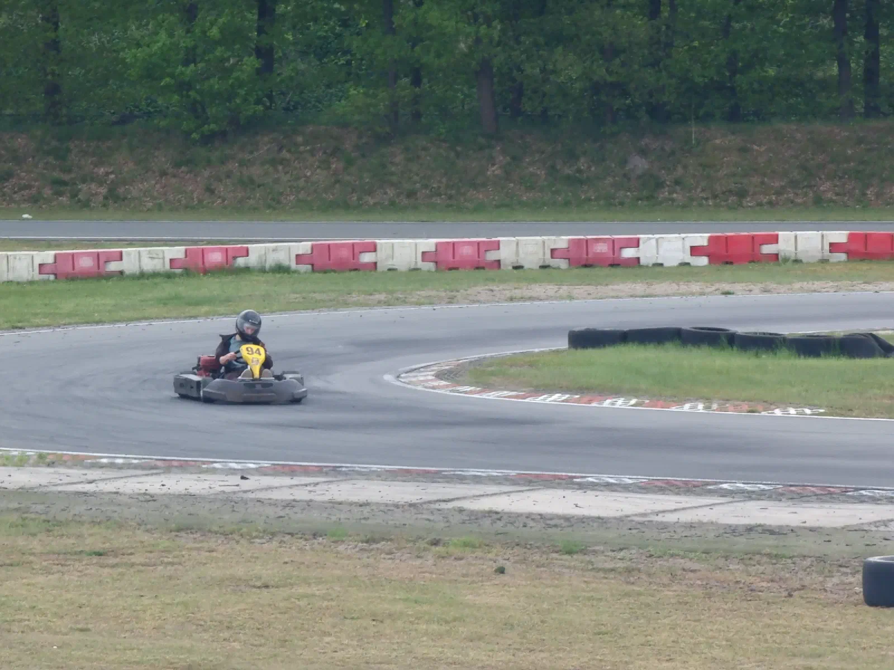
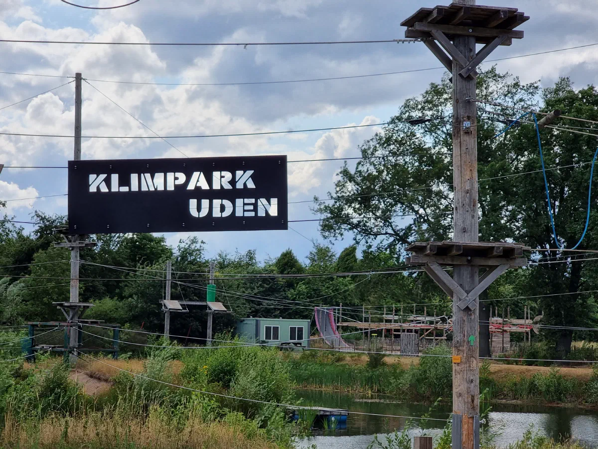
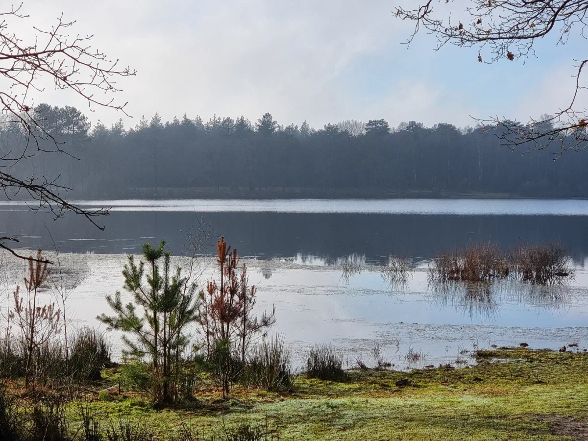
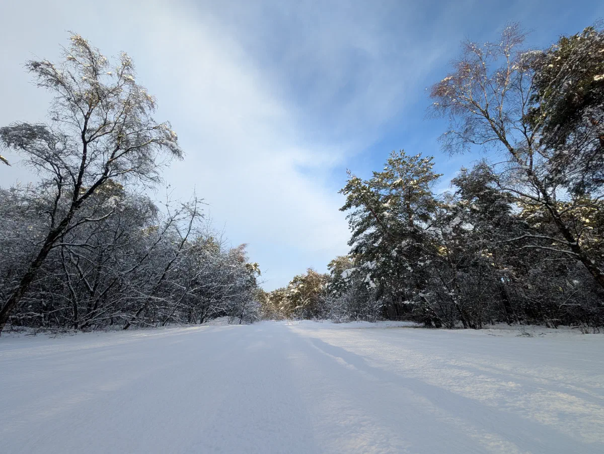

Of je nu op zoek bent naar rust in de natuur, een sportieve uitdaging of een gezellig diner: er is voor ieder wat wils.

Natuur & wandelen
Geniet van de rust en de unieke flora en fauna van de Brabantse natuur. De Maashorst biedt eindeloze wandelpaden door bossen, heide en langs schilderachtige vennen.

Natuurgebied Herperduin - De Maashorst 10 min fietsen
Natuurgebied Herperduin wordt ook wel de "Achtertuin" van Berghem genoemd. Herperduin maakt onderdeel uit van natuurgebied de Maashorst.
Ontdek de Maashorst →Uitkijktoren Herperduin 10 min fietsen
De uitkijktoren van Herperduin is een absolute 'must-visit' tijdens uw verblijf. Gelegen op een van de hoogste punten van het gebied, biedt deze architectonische blikvanger een 360-graden panorama over de heide, de grazende Schotse Hooglanders en de dichte bossen.
Meer info →
Eten & drinken
Gezellige restaurants en terrassen op steenworp afstand. Van pannenkoeken tot luxe dineren: de regio heeft voor elke smaak iets bijzonders.
Pan & Zo 10 min fietsen
Gezellig pannenkoekenrestaurant met een uitgebreide kaart.
Pannenkoeken & meer →Bomenpark 9 min auto
Luxe lunch en diner bij de culinaire toegangspoort van natuurgebied de Maashorst.
Luxe lunch & diner →
Actief & sportief
Voor de avonturiers en sportievelingen. Van klimmen en karten tot wandelen door het Brabantse land.


Zwemmen & waterplezier
Verfrissing op warme dagen of sportief banen zwemmen. De regio biedt verschillende zwembaden en recreatieplassen voor een heerlijke dag aan het water.


Cultuur & uitgaan
Bioscoop, theater en musea in de regio. Van de nieuwste blockbusters tot ambachtelijke brouwerijen: er valt altijd iets te beleven. Op Tref het in Oss vind je het actuele aanbod aan evenementen en uitgaanstips.
Bioscopen
Theater & musea
